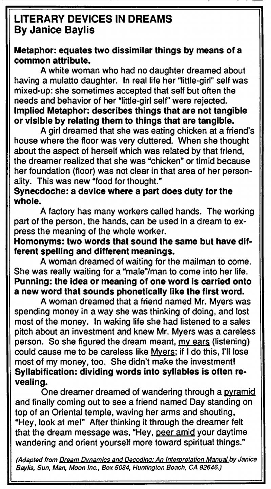

The Association for the Study of Dreams Conference in Santa Cruz this past June provided me with a golden opportunity to meet several dreamworkers whose writings have impressed me. Janice Baylis was one. Her two books, Dream Dynamics and Decoding: An Interpretation Manual (1976) and Sleep on It! The Practical Side of Dreaming (1977), published by her own Sun, Man, Moon, Inc. are excellent, easy-to-read guides for understanding dreams. In addition to being very grounded and articulate as a dreamworker, I found her to be soft-spoken, warm-hearted, quick-witted and utterly delightful.
Jill: When and how did you become interested in dreams?
Janice: It all began 25 years ago with a precognitive dream of a friend of mine. For two and a half weeks I had been picking her up at a spot in front of a shopping area so we could carpool together. One morning she called and asked me to get her around the corner from the stores instead. I did, although I grumbled to my three sons about her being a little strange. When I picked her up at the new location, we heard an enormous sound. Right where we had been meeting, a small airplane had crashed! We all would have been under it! My friend told me she changed our plans because she had seen it in a dream the night before. From that point on, I was sold. I wanted to understand how dreams could do that.
Jill: You are the founder/director of Sun, Man, Moon, Inc. under which you published Dream Dynamics and Decoding. What does that stand for?
Janice: Sun is the super-conscious, Man is the self-conscious, Moon is the unconscious and the Inc. is for Inclusive, not Incorporated. I chose the name because all of those feed into our dreams.
Jill: I am often asked about precognitive dreams and share your intrigue with understanding the dream process in this regard. What is your current thinking on this issue?
Janice: I believe that a lot of people have precognitive dreams. To me they are part of dreams being practical, useful and timely in our lives. They're fun and fascinating. They point to our outer and inner world being more connected than we think. Precognition may be unexplainable at our current stage of development, but there is so much we don't know.
Jill: In your book, Sleep on It!, you mention using a dismantled ladder from a pet shop to illustrate the relationship between dreams and our two levels of mind-the conscious and the unconscious. Would you briefly summarize that analogy?
Janice: One pole of the ladder represents the conscious mind. We use this pole to probe the environment through our five senses. Then we use rationality, logic and emotions to judge and react. That's how the waking mind works. The other pole is the unconscious mind which, during sleep, probes the world further through ESP, discovering facts and relationships unseen by our conscious mind. Remembered, recorded and understood dreams are the rungs connecting these two levels of mind. When the poles are connected, they become aligned and can both be raised for use as a ladder to climb to greater heights. From vantage points along the rungs, we get a broader and more complete view of our own life and of the world.
Jill: What I like about your books is that they are easy to understand and literally filled with examples and analogies. You explain ideas, principles and techniques very well.
Janice: That must come from my background in teaching. I've taught every level from elementary school to adult education. And I've taught community college dream classes since 1972. There is one main theme of my interest in dreams which I like to emphasize. We live life in our daily world not in a lab. Therefore, I am interested in dreams as related to daily living (anecdotal records and cases) rather than scientific laboratory research. Research is important. It just isn't my cup of tea.
Jill: Since your writing is so anecdotal, it seems appropriate that I should include a few examples. Tell me some favorites.
Janice: One dream I like is one of my own. At one point in my spiritual search, I had gotten involved with a particular occult group. Wondering about their ideas, I dreamt the following: I'm in a large auditorium. Various people from this occult group are milling around not doing anything in particular. /look down and notice that I am bare-breasted and my contact lenses are on the ends of my boobs. Since the occult group members were in the dream, I knew that was what the dream was about, but what was it saying to me about this group? Suddenly it came to me! They are not doing anything in particular so they are not a productive group, and contact lenses are for seeing through, so the dream is showing me that "I can see through these boobs!" Another example from a student of mine shows how a disgusting and grotesque image can be communicating something quite different. The dreamer was a lady who had been dating a man she liked very much. She felt that he liked her too and was horrified and disappointed after waking up from this dream: My boyfriend and I are together in a desert. He sees a snake skin. When he picks it up it suddenly comes alive. A gun appears on a rock beside me. I pick it up intending to shoot the live snake. Instead I hit my boyfriend's head and his brains fly out. I feel surprised. The meaning that fit for her is that she "blew his mind." You see, mind is not a visual thing but brains are, and the two are associated by virtue of their functional relationship. The dream says that she amazed him and excited him causing his sexual feelings, which he had begun to think were dead, to come back to life. And this is a surprise to her.

Jill: One of the terms which I associate with you is "slanguage," a combination of the words "slang" and "language." What exactly do you mean by this term in relation to dreams? Why does it occur and how can we use it?
Janice: The dream mind says something in words. Then it shifts to the other side and makes pictures. When something that is not visual needs to be communicated, the dream mind gives us pictures of words in the way that we use them in daily talk. This involves cliches, colloquialisms and puns. Unfortunately, when we are awake, we often take these pictures literally and miss the slang or non-visible meaning. One example is a sack of chicken feed a man brought his wife in a dream. The "chicken feed" was a picture of the slang term which means "not much money." The man needed to realize that he was not being an adequate provider financially. A recently divorced woman dreamed of watching an Oriental woman lead her children through a forest. An Oriental is something we can see. Getting oriented or adjusted to new surroundings or ideas is something we can't see. We do it in our mind. This dream shows the woman needing to orient herself to the divorce and lead her children through a time of confusion. Another example is hair. Often, when a dream wants to communicate "thoughts," it will use the visual picture of hair. Hair grows out of the head like thoughts. In one dream I had dyed my hair black. I was feeling depressed at the time and the dream was addressing my "black or dark thoughts." Looking for the problem or situation in one's life and then connecting the dream to that helps. A man I knew kept asking his dreams to tell him about a past life just to satisfy his curiosity. The dream he got was helpful but unexpected. In the dream he climbs into his car, tries to look back but there is no rear view mirror. I emphasize slanguage for two reasons. First, it is a very easy style of dreamwork for me-it comes naturally-and second, because I think that people are not paying enough attention to that aspect of dreams.
Jill: Who has been influential for you in developing your own relationship to dreams?
Janice: Ann Faraday's book, The Dream Game, helped me with the language of metaphor. I enjoyed a workshop on Senoi methodology at the University of California at Irvine with Joseph Hart. I attended a conference at Asilomar with Ken Keizer and Scott Sparrow which was helpful. I've also attended workshops with Jenny Davidow, Alan Vaughn and Charu Colorado. I studied and taught at the Association for Research and Enlightenment with Hugh Lynn Cayce and have done work with Herbert Puryear, Stanley Krippner and Ernest Rossi. Despite this input, I feel rather isolated as a dreamworker. The ASD and the Dream Educator's Network are my only organizational connections to colleagues. But I am basically a shy person.
Jill: Did you do dream-sharing and dreamwork with your children?
Janice: My ex-husband was an engineer. He was not at all into dreams. I did a little with my sons but it didn't last because they didn't want Mom having all of that information about their lives.
Jill: What are you currently doing in the field?
Janice: Two years ago I retired from teaching. I am lecturing about dreams, inventions and creativity. I wrote a chapter on "Dreams and Creativity" in a book entitled Creative Innovators which will be out in December of this year.
Jill: What are your goals as a dreamer?
Janice: I want to develop my lucid dreaming and do things like Scott Sparrow and Ken Keizer did: going to the "light," having a mystical experience.
Jill: What are your goals as a dreamworker?
Janice: I want to get more articles published for the general public, giving them practical suggestions and information. That is what you and I both know that people want, need and use. In addition to her interest in dreamwork and writing, Janice is a member of the Society of Dowsers. She has three sons and five grandchildren and currently lives in Los Angeles. Janice belongs to the Church of Religious Science and loves the beach.